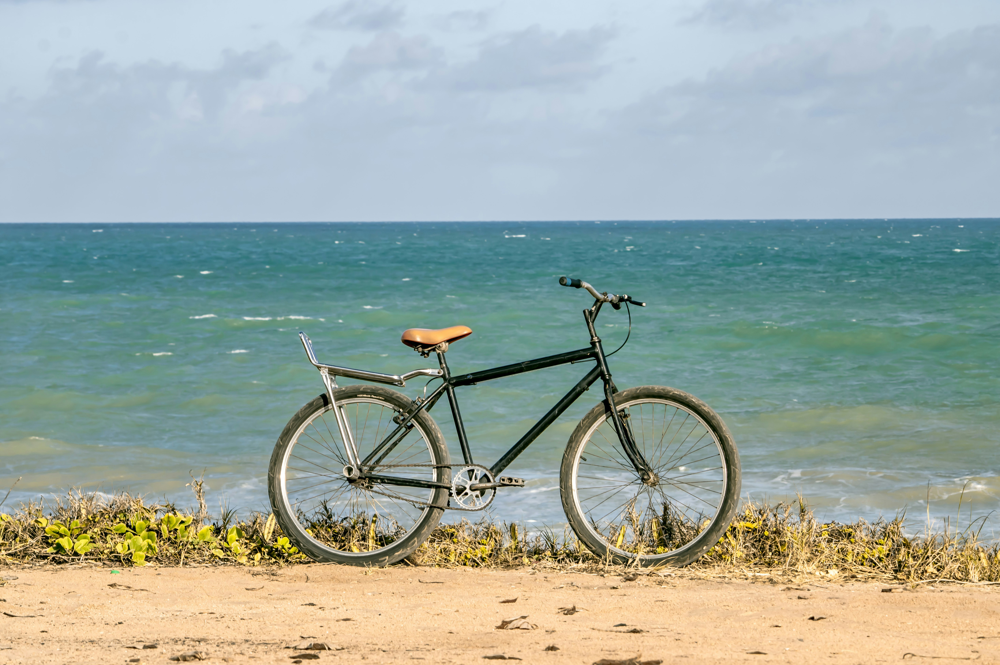
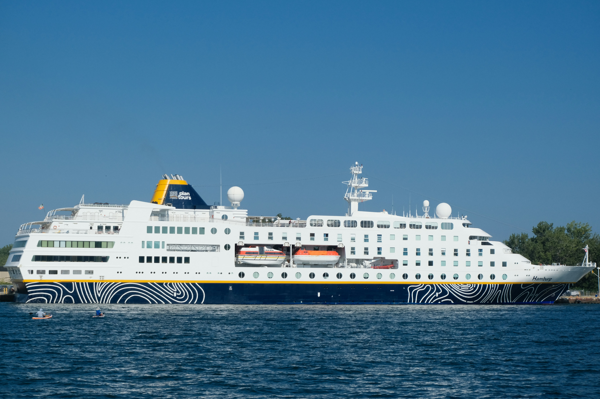

Island Transportation

Photo by Vaskar Sam on Unsplash
Take a ride on one of the fishing boats around the islands.
Sight Seeing Option

Photo by Ian Talmacs on Unsplash
Rent a bike while you stay here to enjoy the beautiful weather of the island. Perfect for those who want to sight see around the island.
Getting To Taniti
Photo by Kevin Charit on Unsplash
Taniti has a wide variety of was you can travel to the island. The most used option is by plane as you can get a flight straight to Taniti airport.

Photo by Anil Baki Durmus on Unsplash
The second option to get to Taniti, a cruise liner. The second popular option among the tourist who visit Taniti.